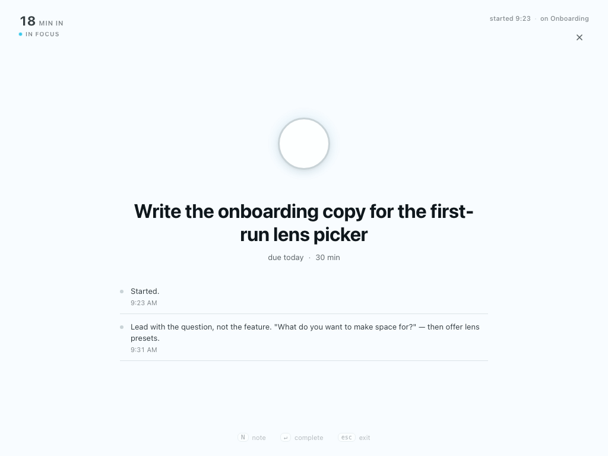
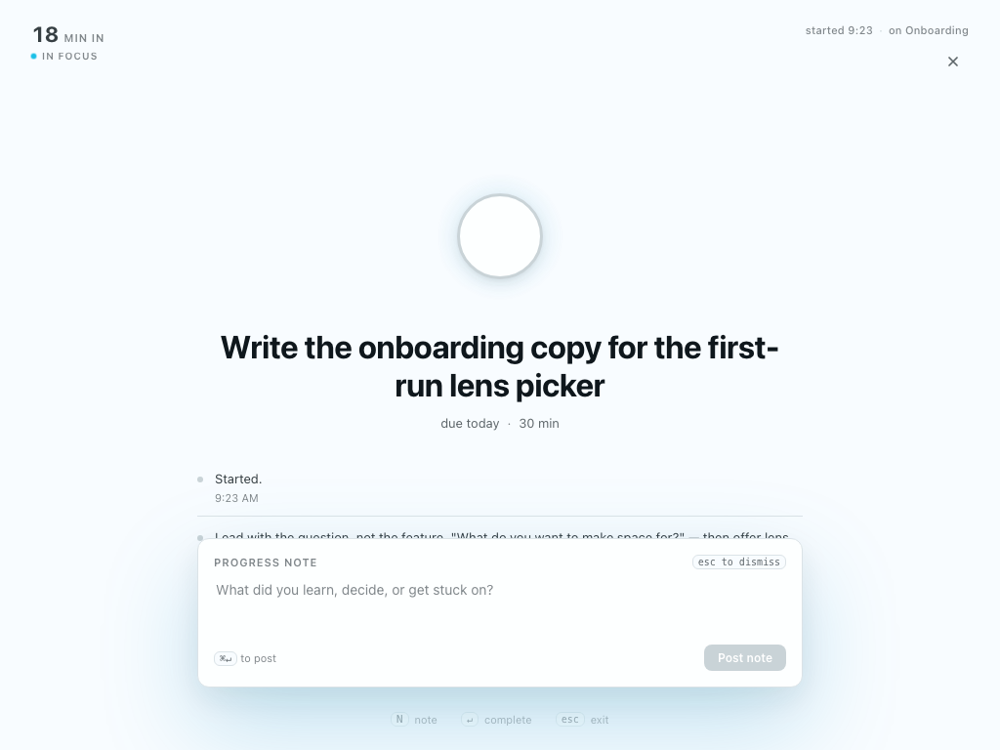
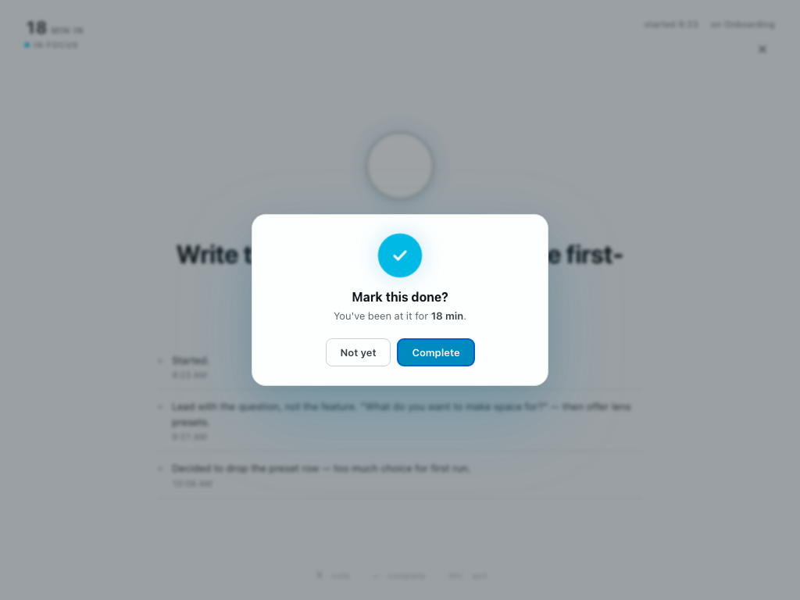
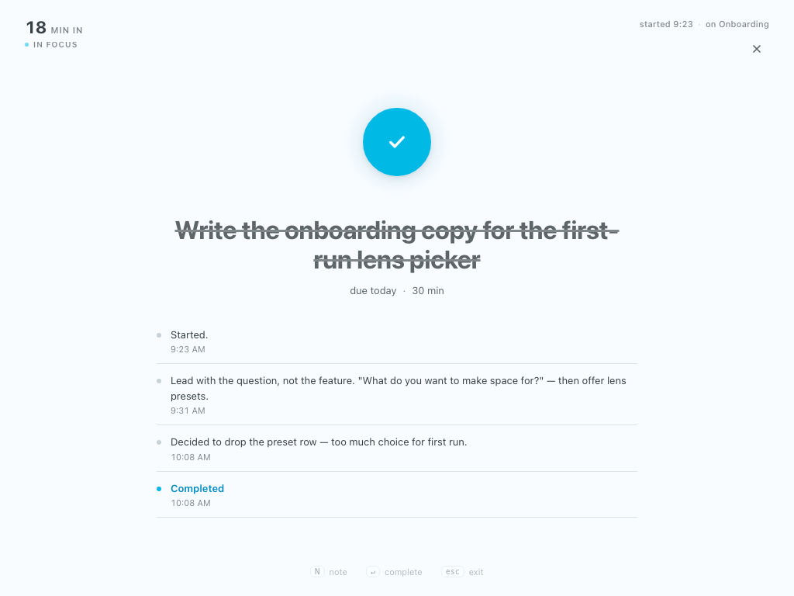

Variant F takes D's margin-clock layout and merges in C's keyboard-hint pattern, a summoned notes composer, an append-only progress thread, and a confirmation dialog on completion. Interaction-tested: every flow below passes with zero console errors.




The margin clock is the only clock. Elapsed time sits in the top-left, like a wall clock — present, glanceable, never between your eye and the task. The center circle stays static; it's the completion affordance, not a timer.
Notes are summoned, not always-visible. Press N, type, post with ⌘↵. Each note lands in a chronological thread beneath the title — your trail of decisions and discoveries. The empty state itself is a hint.
Completion asks first. Click the circle or press ↵ and a calm confirm appears — "Mark this done? You've been at it for 18 min." Confirm pays off: the circle fills teal with a spring check, the title strikes through, a Completed event joins the thread.
N anywhere → composer slides up⌘↵ (or click Post) → note joins the thread with a timestampEsc dismisses without posting↵) → confirm dialogEnter / click Complete → task doneEsc / click Not yet → back to work